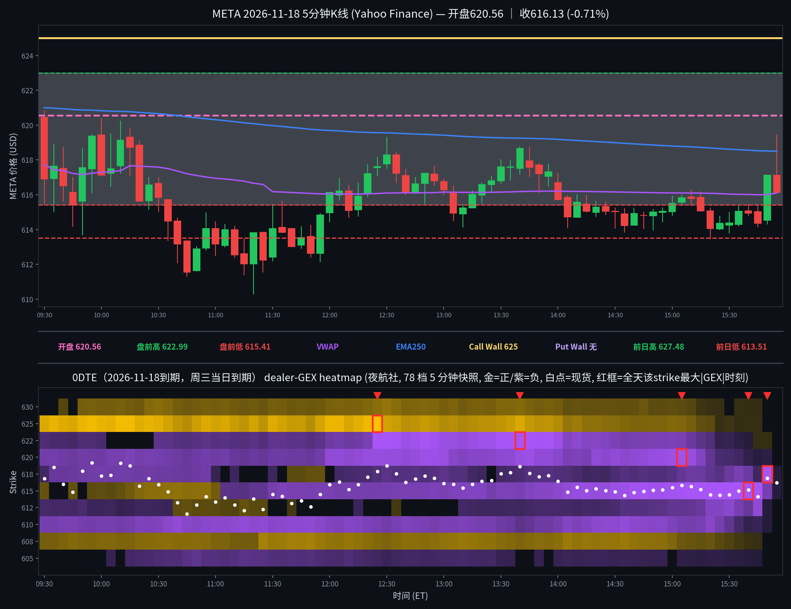

META 日内报告
2026年11月18日 · 周三 · 日内报告
早盘分析
（Junk-man 早盘简报未抓取到，留空待补）
（待补充 Junk-man 当日 #junkman-analysis 原文）
5 分钟 K 线＋0DTE dealer-GEX heatmap
0DTE（2026-11-18 到期，周三当日到期）dealer-GEX heatmap，78 档 5 分钟快照；墙位为 Junk-man 简报口径（本日缺席记 null），算法墙见正文。

heatmap解读（0DTE 2026-11-18 到期链，78 档）
0DTE（2026-11-18 到期）链 78 档 5 分钟快照齐全（09:30–15:55 ET）。总 gamma 全天 -76.9M～+6.1M，2 次翻号；625 King 全天在位（+14.3M→峰值 +20.6M @12:25，收盘前衰减至 0），价格全天 78 根 5m 收盘全部在 620 之下、日高 620.81 距 625 尚有 4.19 点；首帧 Put 墙缺失（现价下方无达标正节点）；620 全天为负（-7.2M → -19.0M @15:05）；615 由正翻负（11:05 首现 -3.6M → -64.5M @15:40，全天最大 |GEX|）；15:55 帧仅剩 2 个 cell（0DTE 到期衰减）。
- 开盘即失守 620、首根长阴：官方开盘 620.56（YHS 日线），盘前高 622.99 / 低 615.41，09:25 盘前价 619.99；首根 5m（09:30）开 620.46、摸日高 620.81 后跌至 615.51、收 616.90——开盘 5 分钟即收在 620 之下，全天 78 根 5m 收盘无一回到 620 之上
- King 625 全天压顶、从未触及：日高 620.81 距 625 尚有 4.19 点；625 King（+14.3M→峰值 +20.6M @12:25）全天在位，14:30 后衰减至 +3.6M、15:30 归零（0DTE 到期衰减）；价格全天在 625 之下
- 11:20 探日低 610.30、在 610 负簇边上止跌：11:20 那根低 610.30（收 613.81），恰落在 610 负簇（-12.0M @11:30）上方 0.30 点——负簇边上止跌，未借其加速下破；此后 27 根收在 615 之下（首根 10:35）
- 615 由正翻负、尾盘负 gamma 集中爆发：615 首帧 +1.24M，11:05 首次翻负（-3.6M），午后一路扩大至 -20.1M @14:45、-64.5M @15:40（全天最大 |GEX|）；617.5 同步 -54.5M @15:50；总 gamma 午后深负（-68.6M @15:30），为 0DTE 到期日近价负 gamma 集中、随到期失效
- 收盘位置：616.13，VWAP 616.10 上方 0.03 点、EMA250 618.50 下方 2.37 点；14:00 FOMC 纪要档（收 615.71）及随后 14:05（低 614.11）未见放量突破，纪要未改变盘整格局；日波幅 10.51 点（620.81–610.30），盘前区间 615.41–622.99（占日波幅 72%）
全天最大节点 TOP5
全天 78 档快照内各 strike 的最大 |GEX|。注意：① 尾盘 615（-64.5M @15:40）与 617.5（-54.5M @15:50）的负值集中是 0DTE 到期日近价负 gamma 集中，随到期失效、不可外推为方向信号；② 全天最大正 |GEX| 仅 20.6M（625 @12:25），链极薄，dealer gamma 对价格的约束很弱，节点量级不可与 SPX 等厚链直接比较；③ 15:55 收盘帧仅剩 2 个 cell（0DTE 到期衰减），TOP5 取值均来自更早帧。
资金流（口径 premium≥$20万｜size≥50｜DTE≤1｜side=at_ask/at_bid；mid单列、绝不计入主动买卖）
（当日无符合筛子的 flow 记录，或数据未拉取到）
DTE≤1 口径下全天 0 笔大单：原始拉取 15 笔全部为远期到期（min_dte≥2），最近的是周五到期（2026-11-20，min_dte=2），按口径不计入——其中 14:48 的 11-20 P725 $164.1万为 mid 单列、16:05 的 11-20 P675 $59.7万 at_ask 亦因 DTE=2 不计入。无 0DTE/1DTE 大单信号，不作方向判断。方向口径：看多=call ask＋put bid，看空=put ask＋call bid，mid 不计。
分析总结
价格行为 × 全天 GEX 结构复盘
① 开盘 620.56（YHS 日线官方开盘；较昨收 618.91 高开 +0.27%），全天 610.30–620.81，收 616.13（-0.45% vs 昨收；收开差 -4.43 / -0.71%）。盘前高 622.99 / 低 615.41，09:25 盘前价 619.99。正常日（lib.EVENT_DAYS 无 2026-11-18 条目；今日 14:00 FOMC 会议纪要按用户当日亲定按正常日处理；周五月度 OPEX）。
② 白点轨迹（K 线）：首根 09:30 开 620.46、摸日高 620.81 后跌至 615.51、收 616.90 → 09:55 反抽收 619.37（全天最高收盘）→ 10:35 首根收破 615 → 11:20 探日低 610.30（收 613.81）→ 午间 12:00 收 616.13 → 午后 13:40 摸 618.67 → 14:00 FOMC 纪要档收 615.71、14:05 低 614.11 → 尾盘 614–617 横磨 → 终根 15:55 收 616.13（VWAP 616.10 上方 0.03、EMA250 618.50 下方 2.37）。
③ 结构（78 档全天）：首帧算法墙 Call 625（+14.3M，= King）、Put 墙缺失（首帧现价下方无达 King 25% 阈值的正节点；下方最大正节点 607.5 +2.19M）；625 King 全天在位、峰值 +20.6M（12:25），价格全天 78 根收盘全部在 620 之下、日高距 625 尚有 4.19 点；620 全天为负（-7.2M → -19.0M @15:05），并非有效 Put 墙；615 由正翻负（11:05 首现 -3.6M → -64.5M @15:40 全天最大 |GEX|）；610 负簇 -8.0M → -13.0M @14:30，日低 610.30 在其上方 0.30 点止跌。总 gamma 2 次翻号，15:55 帧仅剩 2 个 cell（0DTE 到期衰减）。
④ Junk-man 简报已核实缺席（见 junkman 字段）：按 2026-11-05 用户指令不再查 Discord，本地无用户当日粘贴/上传的简报文件，墙位记 null；首帧算法墙见上文，非简报墙。
⑤ 资金流：DTE≤1 口径下全天 0 笔大单（原始 15 笔均为远期到期，min_dte≥2）；无 0DTE/1DTE 大单信号，不作方向判断。
K线=Yahoo Finance 5分钟；heatmap=夜航社 dealer-GEX 5分钟快照（0DTE 2026-11-18 到期链，78 档）。
收盘后的静态快照；页面不在打开时更新行情。Yahoo 官方收盘参考 regularMarketPrice 616.38，与 15:55 bar 收 616.13 差 0.25，报告口径沿用历日惯例取 15:55 bar 收盘价。